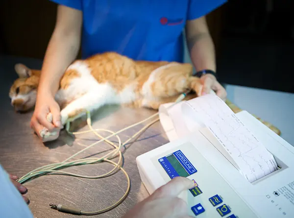
Quando o seu animal fica doente
Medicina geral, emergências e especialidades
A qualquer hora do dia, 365 dias por ano. Consulta geral, urgência ou consulta de especialidade, conforme o estado do seu animal.
Águas Santas · Maia
Oferecemos o serviço mais completo para o bem-estar do seu animal de companhia: uma equipa humana e técnica coesa, disposta a tratá-lo a qualquer hora.
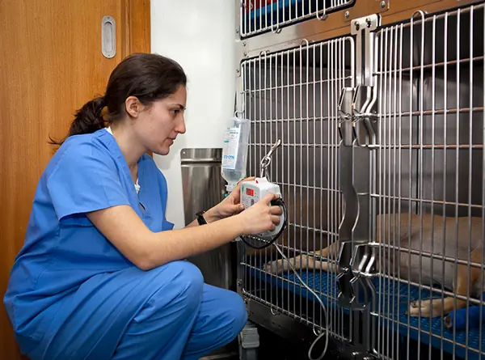
Sobre o hospital
Adoramos animais e por isso queremos encarregar-nos da sua saúde e felicidade.
Desde julho de 2005 que prestamos os nossos serviços a um número crescente de cães e gatos, com um claro compromisso: o bem-estar animal. Para isso apostamos num trato personalizado e próximo com os nossos clientes e os seus animais de companhia.
A saúde do seu animal é para nós uma prioridade. Se o seu animal de companhia é importante para si e quer o melhor para ele, estamos aqui para o atender.
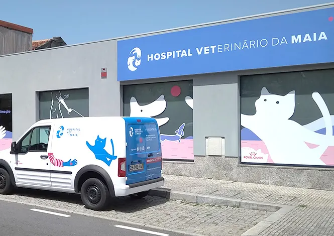
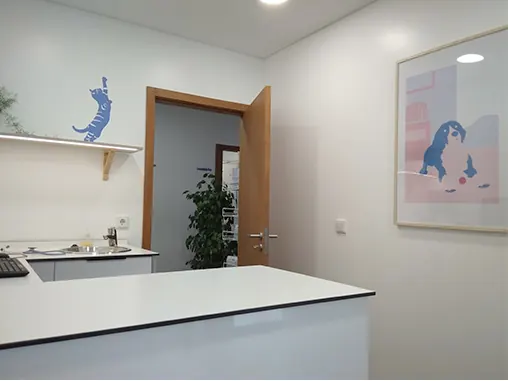
Serviços veterinários
Um vasto conjunto de serviços médico-veterinários, tendo em vista a saúde e o bem-estar do seu animal.

A qualquer hora do dia, 365 dias por ano. Consulta geral, urgência ou consulta de especialidade, conforme o estado do seu animal.
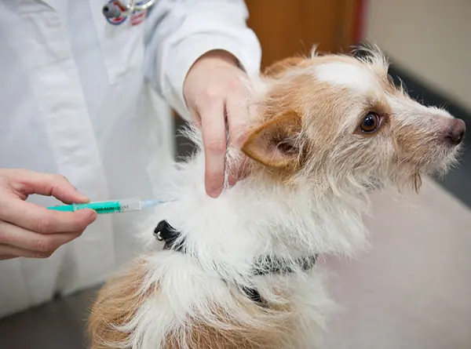
Vacinação, desparasitação interna e externa, nutrição, check-up e identificação eletrónica, ajustados à espécie, idade e estilo de vida.
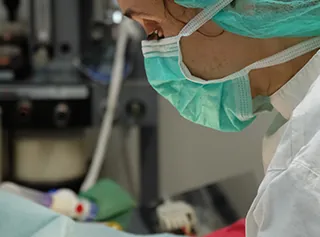
Das esterilizações à cirurgia abdominal e torácica, com anestesia volátil e grande atenção à dor antes e depois da operação.
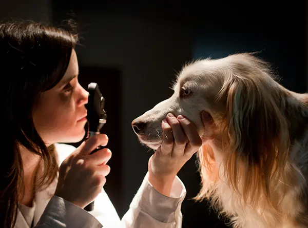
Cirurgias ortopédicas gerais, artroscopias e cirurgias neurológicas.
Nos casos mais graves e na recuperação de cirurgias, o animal fica no nosso internamento, controlado 24 horas por dia.
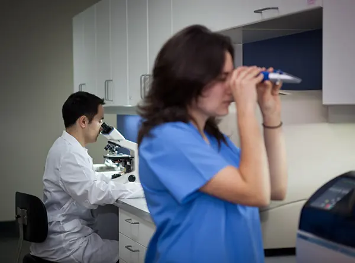
Laboratório com resultados rápidos, radiologia, ecografia, ecocardiografia, eletrocardiograma e medição da pressão arterial. TAC e ressonância com centros de referência.
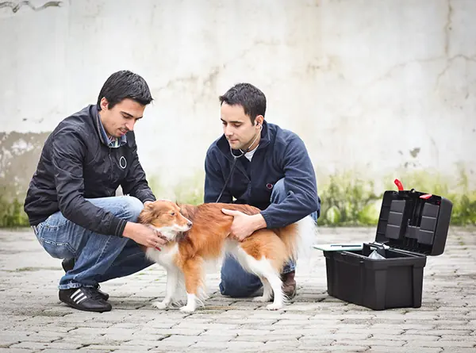
Consultas, exames e vacinação em casa. Entregas de ração, produtos e medicamentos veterinários na área à volta do hospital.
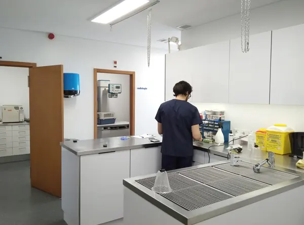
Corte de unhas, expressão das glândulas perianais e limpeza dos ouvidos, para o seu companheiro andar sempre confortável.
Método de trabalho
Consultas por marcação das 10h às 20h de segunda a sexta e das 10h às 19h ao sábado. Venha ao hospital ou ligue-nos.
O médico veterinário recolhe toda a informação sobre o seu animal e faz um exame físico exaustivo.
Quando é preciso, análises, radiografia, ecografia, eletrocardiograma, citologia ou outros exames. O médico indica-lhe os mais adequados.
Em casa ou com hospitalização, sempre com acompanhamento para avaliar a evolução do seu animal.
Animais em estado crítico são atendidos de imediato, 24 horas por dia, por ordem de chegada e gravidade, depois da triagem feita pela equipa de enfermagem. As consultas não marcadas aguardam pela disponibilidade da agenda.
Equipa
Os fundadores abriram a Clínica Veterinária de Águas Santas em 2005 e acompanharam a passagem a Hospital Veterinário da Maia.
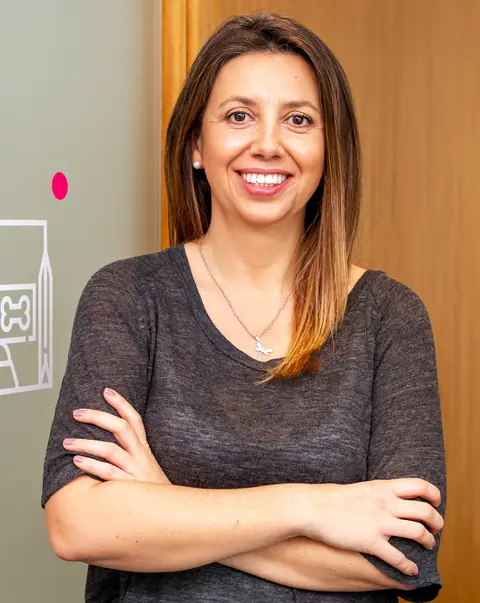
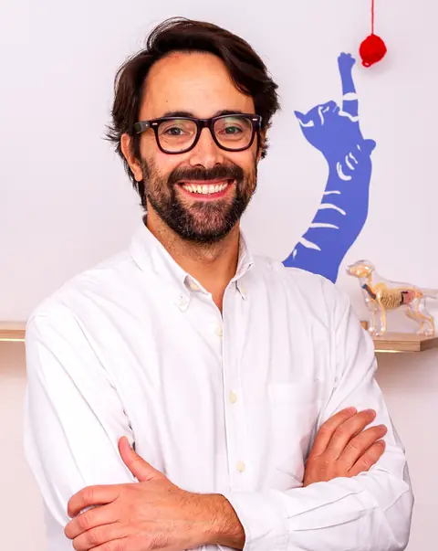
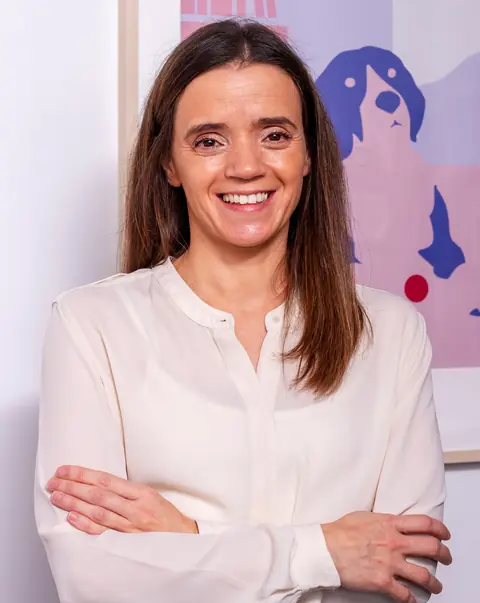
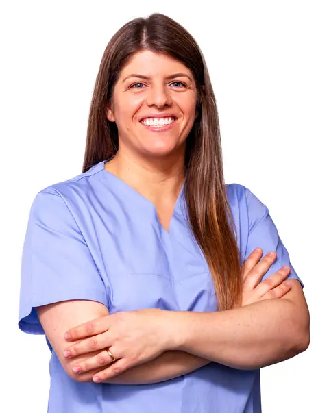
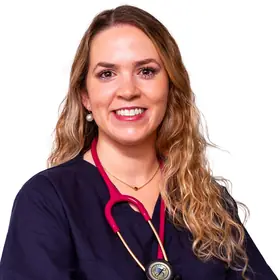
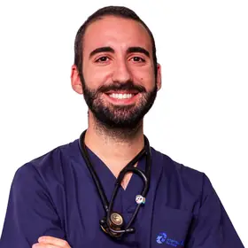
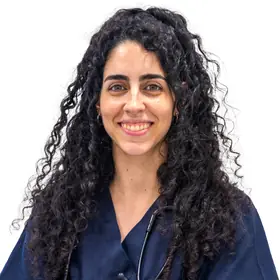
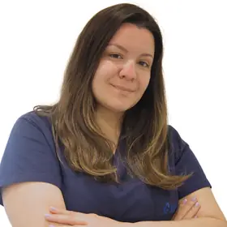
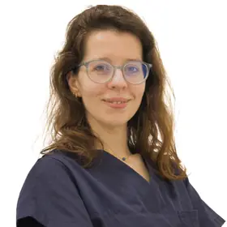
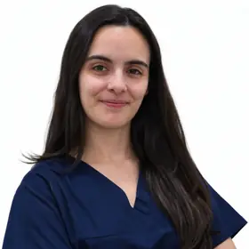
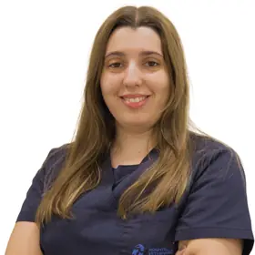
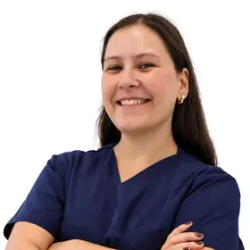
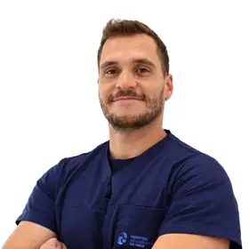
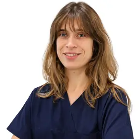
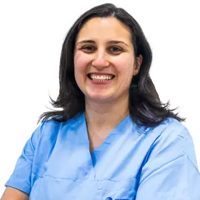
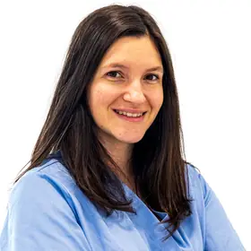
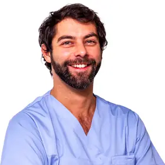
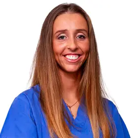
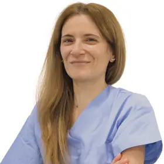
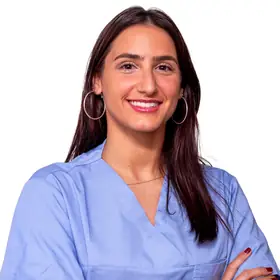
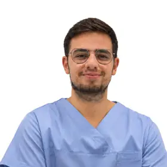
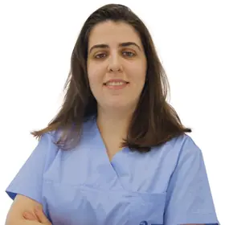
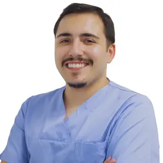
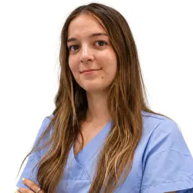
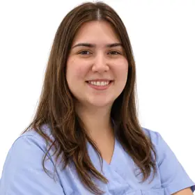
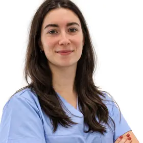
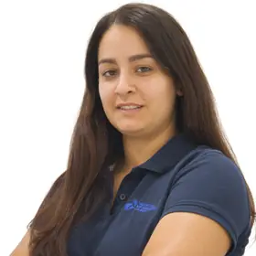
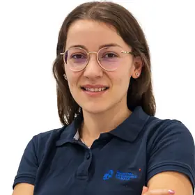
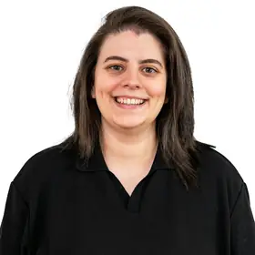
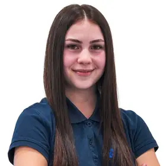
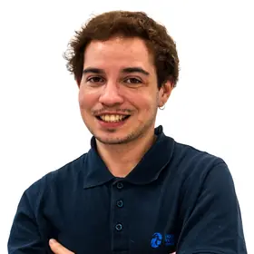
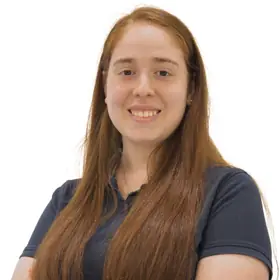
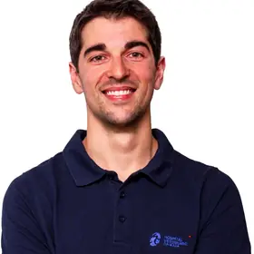
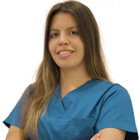
Testemunhos
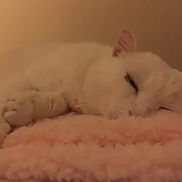
Há três anos a Bianca foi diagnosticada com diabetes (…). Para nós o Hospital Veterinário da Maia é mais do que um hospital, é um conjunto de pessoas extremamente competentes com quem podemos contar sempre.
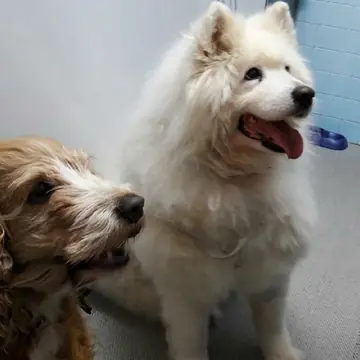
Sempre que necessitei duma urgência fui sempre muito bem atendida, com todo o apoio e profissionalismo. Sempre disponíveis a qualquer hora a dar conhecimento por telefone como corria o internamento.
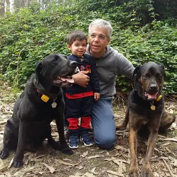
Ao longo de 8 anos, em momentos de aflição e outros de mero acompanhamento preventivo, a minha família de quatro patas sempre contou com o apoio do Hospital Veterinário da Maia.
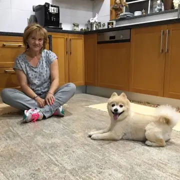
Já estive muito doentinho, duas vezes em que quase perdi a vida. Se não fosse a equipa do Hospital Veterinário da Maia, já não estava aqui.
Os nossos contactos
Estamos no centro de Águas Santas, junto ao Mosteiro de Águas Santas.